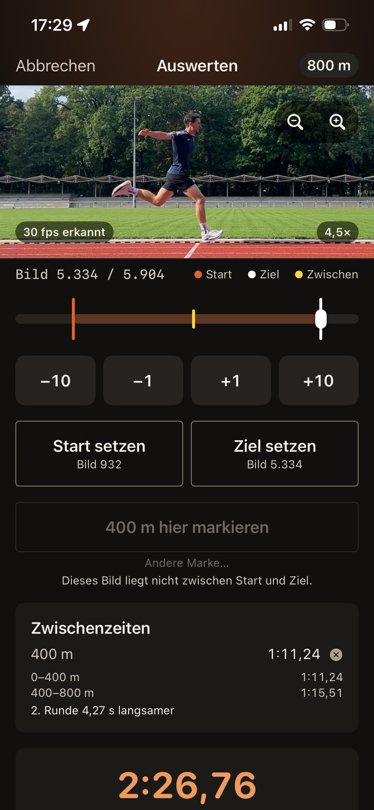

01 / Dein Lauf
So funktioniert es.

Aufstellen.
Handy seitlich auf Höhe der Ziellinie aufstellen — das Prinzip der Zielkamera.
Bereit machen.
Vorlauf einstellen und zum Start gehen. Die Aufnahme beginnt von selbst. Auf Wunsch brennt ab „Auf die Plätze“ die Taschenlampe und geht mit dem Schuss aus — das siehst du auch aus der Startposition.
Loslaufen.
„Auf die Plätze – fertig" — dann der Startschuss nach einer zufälligen Pause, damit sich der Start nicht vorwegnehmen lässt.
Genau hinsehen.
Nach dem Lauf schiebst du dich Bild für Bild an den Moment, in dem du die Ziellinie kreuzt.
Zeit gespeichert.
02 / Die App
Was drin ist.
Ein iPhone. Dein Training.
Messen ohne Zusatzgerät — ein iPhone reicht, kein Bluetooth-Zubehör, keine Lichtschranke
Dein Video wird zur Zeit.
Bereits gefilmte Videos aus der Mediathek nachträglich auswerten
Deine Entwicklung im Blick.
Bestzeiten, Formkurve und Höchstgeschwindigkeit aus deinen echten Läufen
Deine Zahlen gehören dir.
Alle Läufe als Datei exportieren — die Zahlen gehören dir

03 / Deine Daten
Alles bleibt
auf deinem Gerät.
Kein Konto. Keine Registrierung. Kein Server. Videos, Zeiten und Favoriten liegen ausschließlich auf deinem iPhone.
DatenschutzProvarun für iPhone
Jetzt im App Store.
Kostenlos fürs iPhone. Erhältlich in Deutschland, Österreich, der Schweiz und Luxemburg.
Im App Store ladenHinweis
Provarun ist ein Trainingswerkzeug, keine Wettkampfmessung nach den Regeln eines Verbandes. Die Zeiten sind dafür gedacht, dich mit dir selbst zu vergleichen.
Sprinten ist eine hohe Belastung. Trainiere im Rahmen deiner Möglichkeiten und kläre bei gesundheitlichen Beschwerden die Belastung vorher ärztlich ab.